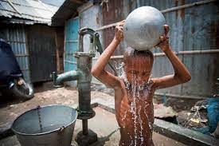
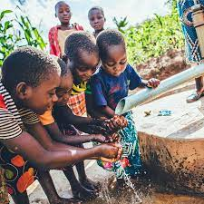
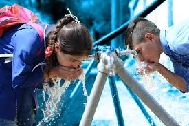
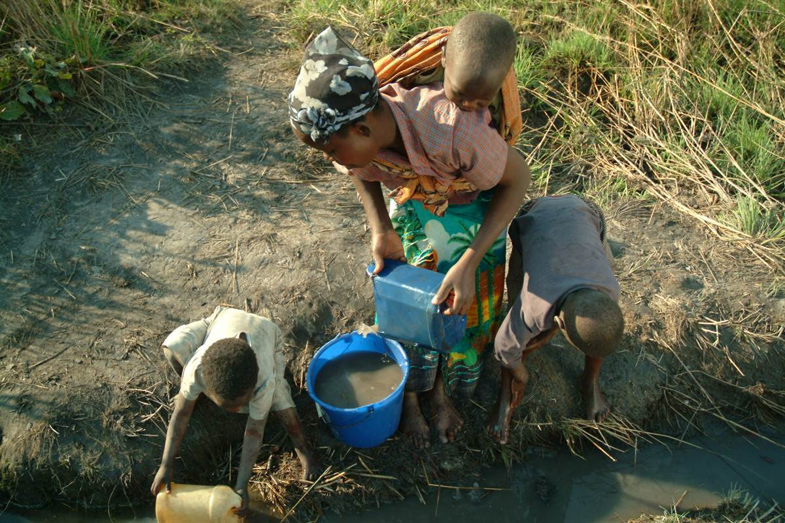
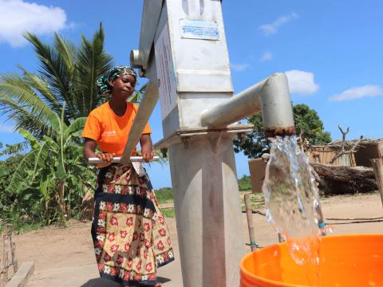
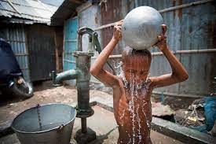
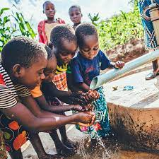
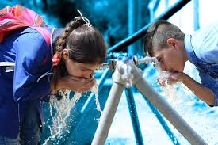
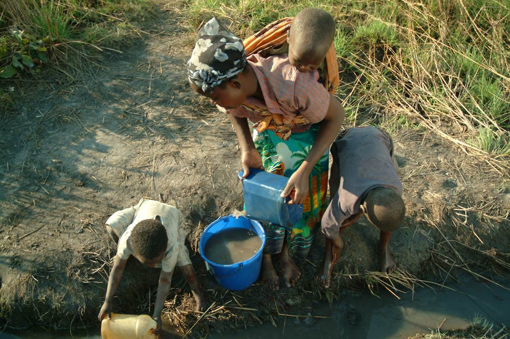
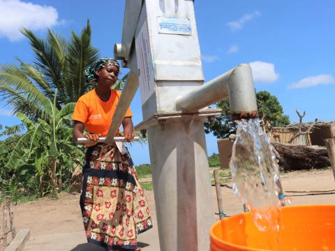

Dalam upaya mewujudkan target SDG 6, Indonesia memiliki peluang besar untuk menghadirkan solusi air bersih yang lebih efisien dan inklusif. Meski menghadapi hambatan seperti keterbatasan anggaran dan infrastruktur, perkembangan teknologi dan penguatan peran masyarakat membuka jalan bagi sistem pengelolaan air yang lebih modern dan mudah diterapkan. Dengan memanfaatkan potensi lokal, inovasi air bersih dapat dirasakan hingga ke daerah terpencil.
Beberapa solusi yang dapat diimplementasikan meliputi:
Untuk mengatasi keterbatasan infrastruktur dan anggaran, Indonesia dapat mengembangkan Water Hub Nusantara, yaitu sistem manajemen air terpadu yang menggabungkan teknologi sederhana dengan sistem digital dengan bantuan partisipasi aktif masyarakat. Water Hub ini menggunakan sensor kualitas air murah sehingga tidak memerlukan anggaran yang tinggi yang terhubung dengan aplikasi nasional berbasis GIS. Untuk aplikasinya sendiri akan dibuat oleh generasi muda bangsa dengan cara menyelenggarakan lomba membuat aplikasi yang bersifat nasional. Sensor kemudian dipasang di dalam air dengan berbagai cara, tergantung jenisnya. Sebagai contoh, Untuk sumur bor / sumur gali, sensor digantung menggunakan kabel dan dicelupkan ke pipa sumur bor (bagian atas) dan untuk jaringan pipa desa sensornya dipasang di pipa aliran utama (inline) atau di kotak kecil yang dilewati air (flow cell), Dengan sistem ini, pemerintah dapat memantau kualitas air, kebocoran jaringan, dan kapasitas sumur bor secara real-time, sehingga anggaran yang terbatas dapat dialokasikan lebih tepat sasaran. Di wilayah tertinggal seperti Papua Barat atau Maluku, Water Hub dapat dikombinasikan dengan panel surya agar tetap dapat beroperasi meski infrastruktur energi terbatas.
Salah satu jenis sampah yang paling banyak dibuang ke saluran air seperti sungai ataupun got adalah sampah jenis plastik. Oleh sebab itu, untuk mengatasi masalah budaya membuang sampah sembarangan serta pencemaran air, dapat diterapkan inovasi berupa Bank Sampah Air, yaitu sistem yang memberikan poin atau insentif bagi warga yang mengumpulkan sampah plastik. Melalui skema ini, masyarakat didorong untuk aktif mengumpulkan plastik sebelum mencemari sungai atau drainase, lalu menukarkannya di pos Bank Sampah Air yang telah disediakan di tingkat desa atau kelurahan. Setiap kilogram plastik yang dikumpulkan akan dicatat dan dikonversi menjadi poin yang dapat ditukar dengan berbagai manfaat seperti pulsa, makanan, atau voucher belanja lokal. Dengan sistem insentif ini, perilaku warga perlahan akan bergeser dari kebiasaan membuang sampah sembarangan menuju kebiasaan baru yang lebih bertanggung jawab, sambil sekaligus meningkatkan kebersihan sumber air dan kualitas lingkungan secara keseluruhan.
 








